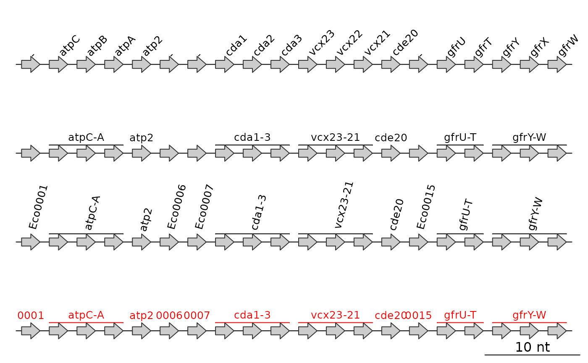

Auto-annotate dna_segs
auto_annotate.RdAnnotate dna_segs in a smart way. This is especially designed for
dna_segs read from GenBank or EMBL files, but can be used for other
purposes as well. With the default arguments, it produces annotation
objects based on the gene attribute of dna_segs.
Usage
auto_annotate(
dna_seg_input,
names = "gene",
basic_mode = FALSE,
locus_tag_pattern = NULL,
keep_genes_only = TRUE,
dna_seg = NULL,
...
)Arguments
- dna_seg_input
Either a single
dna_segor a list ofdna_segobjects.- names
A character string with the name of a
dna_segattribute, to base the annotations on. Ifdna_seg_inputis a singledna_seg, it can also be a character vector with as many elements as there are rows in thatdna_seg.- basic_mode
Logical. If
TRUE, annotate thedna_seg_inputusing thenamesargument, ignoring all other arguments and never generating spanning annotations.- locus_tag_pattern
A character string giving a pattern, used to simplify names. To turn this off, use
locus_tag_pattern = "". See details.- keep_genes_only
Logical. If
TRUE, then for any row wherenamesis"-","NA", or empty (""), no annotations will be made. See details.- dna_seg
Deprecated, included for backwards compatibility. When provided, replaces
dna_seg_input. it.- ...
Further arguments to be passed to the
annotationfunction, likerotorcol.
Value
If dna_seg_input is a single dna_seg, then a single
annotation object will be returned.
If dna_seg_input is a list of dna_seg objects, a list of
annotation objects will be returned of equal length.
Details
keep_genes_only is intended to be used with the gene column. When TRUE,
it will only make annotations for names that are not 'empty' ("-",
"NA", or ""). When it is FALSE however, locus_tag_pattern becomes
relevant. For any element of names that is 'empty', it will take the name
attribute of the dna_seg and remove the locus_tag_pattern from it
(e.g. Eco003456 becomes 003456, with Eco as the locus_tag_pattern).
If locus_tag_pattern is left as NULL it will attempt to determine a
common prefix automatically. To turn this behavior off, use
locus_tag_pattern = "".
If names refers to gene names, it will create spanning annotations for
operons or sequences of genes. For this to work, gene names have to be
consecutive and end with a number or capital letter.
Examples
## Prepare dna_seg
names <- paste("Eco", sprintf("%04d", 1:20), sep = "")
gene <- c("-", "atpC", "atpB", "atpA", "atp2",
"-", "-", "cda1", "cda2", "cda3",
"vcx23", "vcx22", "vcx21", "cde20",
"-", "gfrU", "gfrT", "gfrY", "gfrX", "gfrW")
ds <- dna_seg(data.frame(name = names,
start = (1:20) * 3,
end = (1:20) * 3 + 2,
strand = rep(1, 20),
gene = gene,
stringsAsFactors = FALSE))
## Original annotation
annot1 <- annotation(x1 = middle(ds), text = ds$gene, rot = 45)
## auto_annotate with various options
annot2 <- auto_annotate(ds)
annot3 <- auto_annotate(ds, keep_genes_only = FALSE,
locus_tag_pattern = "", rot = 75)
annot4 <- auto_annotate(ds, keep_genes_only = FALSE, col = "red")
## Plot
plot_gene_map(dna_segs = list(ds, ds, ds, ds),
annotations = list(annot1, annot2, annot3, annot4))
